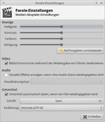

Parole
Dieser Artikel wurde für die folgenden Ubuntu-Versionen getestet:
Ubuntu 16.04 Xenial Xerus
Ubuntu 14.04 Trusty Tahr
Zum Verständnis dieses Artikels sind folgende Seiten hilfreich:
Parole  (frz. für das Sprechen, die Sprache, die Rede) ist ein Medienplayer für den Xfce-Desktop, der auf GStreamer zurückgreift. Neben der Wiedergabe diverser Audio- und Videoformate unterstützt das Programm Internetradio (Live Streams) und das Abspielen optischer Medien. Darüber hinaus ist es der Nachfolger von Xfmedia und damit der neue Standard-Videoplayer von Xfce.
(frz. für das Sprechen, die Sprache, die Rede) ist ein Medienplayer für den Xfce-Desktop, der auf GStreamer zurückgreift. Neben der Wiedergabe diverser Audio- und Videoformate unterstützt das Programm Internetradio (Live Streams) und das Abspielen optischer Medien. Darüber hinaus ist es der Nachfolger von Xfmedia und damit der neue Standard-Videoplayer von Xfce.
Ab Xubuntu 10.10 löste es das bisherige Standardwiedergabeprogramm Totem ab. Allerdings ist im Gegensatz zum Vorgänger noch keine Unterstützung für DVB-C/S/T vorhanden. Eine Liste von Programmen zum Fernsehschauen liefert der Artikel TV.
| Parole |
Installation¶
 Das Programm ist in den offiziellen Paketquellen enthalten. Folgendes Paket muss installiert [1] werden:
Das Programm ist in den offiziellen Paketquellen enthalten. Folgendes Paket muss installiert [1] werden:
parole (universe)
 mit apturl
mit apturl
Paketliste zum Kopieren:
sudo apt-get install parole
sudo aptitude install parole
Bedienung¶
Nach erfolgreicher Installation ist das Programm bei Ubuntu-Varianten mit einem Anwendungsmenü unter "Multimedia -> Parole Medien-Abspieler" zu finden [2]. Die Steuerung des Players ist intuitiv zu erfassen. Einige Menüpunkte sind lediglich eingeblendet, wenn das unterstützte Medium eingebunden ist.
| Bedienung | |
| Menüpunkt | Beschreibung |
| "Medien -> Öffnen" | Lokal gespeicherte Dateien wiedergeben |
| "Medien -> Audio-CD" | CD-Wiedergabe |
| "Medien -> Medium abspielen ..." | DVD-Wiedergabe |
| "Medien -> Ort öffnen" | Internetradio abspielen |
| "Sound" | Lautstärke anpassen |
Mit der Taste F11 (de)aktiviert man den Vollbildmodus.
Wiedergabeliste¶
Der Wiedergabelisten-Editor im unteren Fensterabschnitt ist einfach zu bedienen:
| Wiedergabeliste | |
| Button | Beschreibung |
 | Hinzufügen von Dateien |
 | Dateien aus der Liste entfernen |
  | Sortierung der Liste |
| Erstellen einer neuen leeren Liste sowie Speichern und Laden der Liste(n) | |
Konfiguration¶
 Über "Bearbeiten -> Einstellungen" können Veränderungen an den Anzeige-, Audio- und Untertiteleinstellungen angepasst werden. Sofern man bei der Wiedergabe von Audiodateien visuelle Effekte aktivieren möchte hat man eine Auswahl aus diversen Typen.
Ansicht¶
Das Ansichtsverhältnis kann unter "Ansicht -> Seitenverhältnis" geändert werden. Die Option "Automatisch" passt das Wiedergabefenster an die jeweilige Video-Quelle an.
Plugins¶
Die Erweiterungen sind über "Bearbeiten -> Plugins" bzw. "Bearbeiten -> Erweiterungen" zu erreichen.
| Plugins | |
| Erweiterung | Beschreibung |
| "Symbol im Benachrichtigungsfeld" | Trayicon einblenden. Per  sind Basisfunktionen erreichbar. sind Basisfunktionen erreichbar. |
| "Eigenschaften" | Dateieigenschaften anzeigen lassen |
| "Fenstertitel" | Fenstertitel auf den Namen des derzeit abgespielten Mediums setzen |
Links¶
Install XFCE Parole Media Player 0.9 via PPA in Ubuntu
- Blogbeitrag, 02/2017Videoplayer
 Programmübersicht
Programmübersicht
- Erstellt mit Inyoka
-
 2004 – 2017 ubuntuusers.de • Einige Rechte vorbehalten
2004 – 2017 ubuntuusers.de • Einige Rechte vorbehalten
Lizenz • Kontakt • Datenschutz • Impressum • Serverstatus -
Serverhousing gespendet von